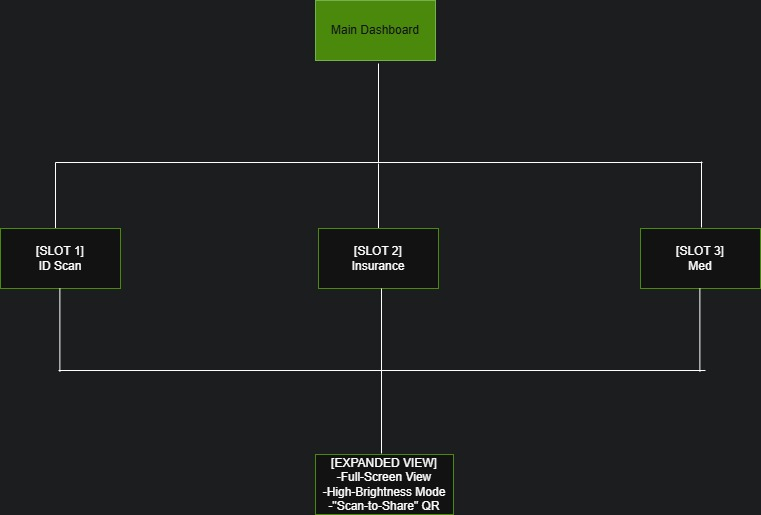
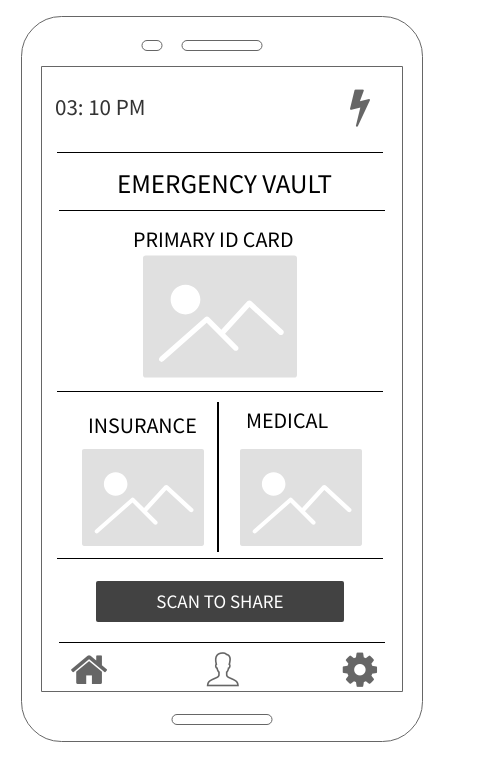

Cista is a minimalist, single-page application that stores only three encrypted, offline-ready documents - photo ID, insurance, and emergency contact/medical - during a crisis or emergencies.
During a crisis, users cannot navigate complex file systems. Existing solutions lack an 'Emergency Mode' that works offline and prioritizes speed over feature volume.
The goal was to design a simple, basic app that ensures immediate, offline access to life-saving information when a user is under extreme stress.
The process for this project consists of the following:
In emergencies like natural disasters or medical crises, users need vital documents immediately. Standard cloud storage (Google Drive/Dropbox) is often too cluttered, requires high bandwidth, or has complex folder hierarchies that fail during high-stress moments
I focused on three key areas:
I identified four primary users:
Across research, users consistently struggled with:
The website needed to:
My bag containing my passport was stolen, and I'm in a foreign country
I'm in an accident and can't speak clearly
I live in a disaster area, and I have my phone but no physical files
I'm in an area without internet/signal
I designed a clear, scalable sitemap - in reality, a context-aware sitemap since it is only one page - to map out the structure and hierarchy of the website to reduce cognitive overload and focus on simplicity by utilizing flat architecture and single-axis navigation.
I created low-level wireframes using MockFlow, which focused on clarity and minimalism as well as using visual hierarchy to make the UI completely recognizable.
The final outcome is a minimalist emergency vault designed to solve the "navigation paralysis" users experience during high-stress crises. Through research, I developed a concept that involves constraining the interface to an offline-first, three-slot Bento Grid so that the app reduces document retrieval time from minutes to several seconds. The resulting structure provides a scalable foundation for future development, including high‑fidelity prototyping and usability testing, demonstrating how UX design can be used in designing for crises and emergencies.
Key Takeaways:
This project laid the groundwork for a more functional site. The next phase will include: